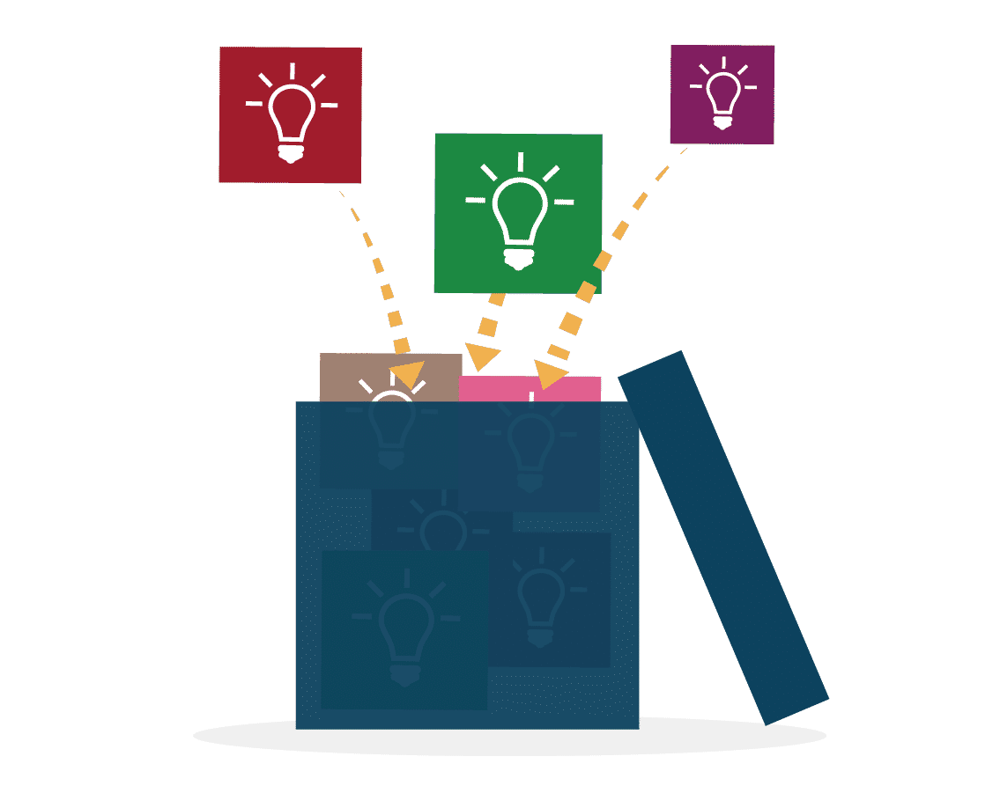

Lesson 5: From Theory to Practice#
Overview#
In this lesson, you will get some practice writing a data management plan. You will then learn how you can get involved in open data communities. You will also learn about resources you can start to use and training you can take to start your journey with open data.
Learning Objectives#
After completing this lesson, you should be able to:
Describe the steps toward writing a data management plan.
List opportunities for involvement in the open data communities.
Identify additional open science resources and list ways to continue training.
Writing an Open Science and Data Management Plan#
The process, responsibilities, and factors to consider when creating an open science and data management plan have been presented throughout this module. Common elements of DMPs relevant to open data include a description of the following:
What? |
Data formats and (where relevant) standards |
When? |
When and if to share data |
Where? |
The intended repositories for archived data |
How? |
How the plan enables reuse of the data |
Who? |
Roles and responsibilities of the team members in implementing the DMP |
Two great places to start are https://dmptool.org/ and https://dmponline.dcc.ac.uk/. You will need to create a free login to use these tools, but both websites walk researchers through the steps of writing a DMP. There are even some existing DMP templates stored within DMP Tool, such as the NASA Planetary Sciences Division’s DMP template.
There are also public examples of data management plans at
https://dmptool.org/public_plans and
https://dmponline.dcc.ac.uk/public_plans.
If you are applying for funding, it is almost guaranteed that there will be specific requirements detailed in the funding opportunity. For example, the funder may require a certain license or use of a specific repository. Make sure to cross-reference your plan with these requirements!
Activity 5.1: Review a data management plan#
Take a look at the example of a public data management plan from the ThEBES project.
In the DMP, answer the following questions:
What: Data formats and (where relevant) standards.
When: When and if to share data.
Where: The intended repositories for archived data.
How: How the plan enables reuse of the data.
Who: Roles and responsibilities of the team members in implementing the DMP.
Open Data Communities and You#
Getting Involved with Open Data Communities#
There are numerous ways to get involved with and support open data communities, including starting your own community.
| REPOSITORIES ☑ | STANDARDS COMMITTEES | CONFERENCES , WORKSHOPS AND SPECIAL SESSIONS |
|---|---|---|
 |
||
| REPOSITORIES | STANDARDS COMMITTEES ☑ | CONFERENCES , WORKSHOPS AND SPECIAL SESSIONS |
|---|---|---|
|
||

| REPOSITORIES | STANDARDS COMMITTEES | CONFERENCES , WORKSHOPS AND SPECIAL SESSIONS ☑ |
|---|---|---|
|
||

Additional Resources#
Disclaimer#
Please note that we reference several papers throughout the course and depending on the paper, it might be blocked by a paywall. If you would like to get a copy of the paper, please contact the Author or search for it in an online preprint archive. For example, bioRxiv.org.
Resources for More Information#
In addition to the resources listed elsewhere in this training, the below community resources are excellent sources of information about Open Data.
References and Guides:
NASA Science Mission Directorate’s Open-Source Science Guidance for researchers
Open Data Module from OpenSciency
Resources for open data through the US federal government
The FAIR Principles from FAIRsharing.org
The Open Data Handbook
Reproducible Research and Data Analysis from FOSTER Open Science
Data publishing guidelines from the Data Management Expert Guide
DataTags: A Harvard University Privacy Tools project to help researchers use and share sensitive data
Best Practices for Data Publication in the Astronomical Literature by Chen et al.
Opportunities for More Training About Open Data#
In addition to the resources listed elsewhere in this training, the community resources listed below provide excellent information on Open Data.
Additional training:
GODAN MOOC about how to use, make, and share open data
Data literacy lessons for an array of disciplines from the Carpentries
MOOC on Data Management, Sharing and Services for Agriculture Development
Lesson 5: Summary#
Now that you have completed the lesson, you should be able to start your journey with open data:
You now know the steps and have practice writing a sample data management plan.
There are a variety of ways to get involved in the open data community.
There are numerous resources available to get more information and take more training about open data.
Lesson 5: Knowledge Check#
Question
01/02
Which of the following are steps to include in a data management plan (DMP)? Select all that apply.
What: Data formats and (where relevant) standards
When: When and if to share data
Why: Why you used an online DMP template
Where: The intended repositories for archived data
Which: Which data communities you are involved in
How: How the plan enables reuse of the data
Who: Roles and responsibilities of the team members in implementing the DMP
Question
02/02
What are the three broad categories of getting involved with open data communities discussed in this lesson? Select all that apply.
Engage with repositories
Join standards committees
Write a data management plan (DMP)
Volunteer and participate in conferences, workshops, and special sessions
Identify data sharing roles and responsibilities on your team
Open Data Summary#
Congratulations! Now that you have completed the module, you should be able to do the following:
Explain what open data means, its benefits, and how FAIR principles are used.
Discover open data, assess the data for reuse by evaluating provided documentation, and cite the data as instructed.
Create an open data management plan, select open data formats, add the needed documentation, including metadata, README files and version control, to make the data reusable and findable.
Evaluate whether your data should and can be shared, and use the data accessibility process, including adding a DOI and citation instructions to enable it to be findable and citable.